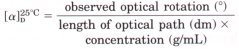
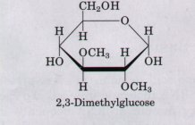

Carbohydrates are polyhydroxy aldehydes or ketones having the empirical formula (CH2O)n. They are classified as monosaccharides or sugars (aldoses or ketoses); oligosaccharides (several monosaccharide units); and polysaccharides (large linear or branched molecules containing many monosaccharide units). Monosaccharides or simple sugars have at least one asymmetric carbon atom and thus exist in stereoisomeric forms. Most common, naturally occurring sugars, such as ribose, glucose, fructose, and m, are of the n series. Simple sugars having five or more carbon atoms may exist in the form of closed-ring hemiacetals or hemiketals, either furanoses (five-membered ring) or pyranoses (six-membered ring). Furanoses and pyranoses occur in anomeric α and β forms, which are interconverted in the process of mutarotation.
Sugars with free, oxidizable anomeric carbons are called reducing sugars. Many derivatives of the simple sugars are found in living cells, including amino sugars and their acetylated derivatives, aldonic acids, and uronic acids. The hydroxyl groups of monosaccharide units can also form phosphate and sulfate esters. Disaccharides consist of two monosaccharides joined by a glycosidic bond.
Polysaccharides (glycans) contain many monosaccharide units in glycosidic linkage. Some function as storage forms of carbohydrate. The most important storage polysaccharides are starch and glycogen, high molecular weight, branched polymers of glucose having (α1→4) linkages in the main chains and (α1→6) linkages at the branch points. Other polysaccharides play a structural role in cell walls. Cellulose, the structural polysaccharide of plants, has n-glucose units in (β1→4) linkage. Chitin, the structural polysaccharide of insect exoskeletons, is a linear polymer ofN-acetylglucosamine, joined in (β1→4) linkages. The rigid porous walls of bacterial cells contain peptidoglycans, linear polysaccharides of alternating Nacetylmuramic acid and N-acetylglucosamine units, cross-linked by short peptide chains. The extracellular matrix surrounding cells in animal tissues contains very large aggregates of heteropolysaccharides (glycosaminoglycans) and proteins, called proteoglycans. Among the glycosaminoglycans in proteoglycans are hyaluronate, a high molecular weight polymer of alternating n-glucuronic acid and N-acetyl-n-glucosamine, and a variety of shorter, very acidic heteropolysaccharides covalently bound to a core protein. Polysaccharides make up most of the mass of proteoglycans.
Glycoproteins contain one or more sugar residues, but most of their mass is amino acid residues. Many cell-surface or extracellular proteins are glycoproteins, as are most secreted proteins. The carbohydrate moieties of glycoproteins influence the physical structure of the proteins, and also serve as biological labels, marking proteins with different oligosaccharides for different fates. Certain oligosaccharides tag a glycoprotein for secretion or insertion into the plasma membrane; others signal transfer to lysosomes. Sialoglycoproteins in the blood that lose their sialic acid residues are targeted for removal and destruction. Glycolipids and lipopolysaccharides are carbohydrate conjugates at the outer surface of cell membranes.
The structure of oligosaccharides and polysaccharides is investigated by a combination of specific enzymatic hydrolysis to determine stereochemistry and produce simple fragments for further analysis, methylation analysis to locate the glycosidic bonds, and high-resolution NMR spectroscopy to establish sequences and confirm configurations.
General
Aspinall, G.O. (ed) (1982, 1983, 1985) The Polysaccharides, Vols. 1-3, Academic Press, Inc., New York.
Binkley, R.W. (1988) Modern Carbohydrate Chemistry, Marcel Dekker, Inc., San Diego, CA.
A comprehensive and up-to-date survey.
El Khadem, H.S. (1988) Carbohydrate Chemistry: Monosaccharides and Their Oligomers, Academic Press, Inc., New York.
Ginsburg, V. & Robbins, P. (eds) (1981, 1984) Biology of Carbohydrates, Vols. 1 and 2, Wiley Interscience, New York.
A collection of excellent reviews of carbohydrates and glycoproteins.
Morrison, R.T. & Boyd, R.N. (1987) Organic Chemistry, 5th edn, Allyn & Bacon, Inc., Boston.
Chapters 38 and 39 cover the structure, stereochemistry, nomenclature, and chemical reactions of carbohydrates.
Pigman, W. & Horton, D. (eds) (1970, 1972, 1980) The Carbohydrates: Chemistry and Biochemistry, Vols. IA, IB, IIA, and IIB, Academic Press, Inc., New York.
Articles on several aspects of carbohydrate chemistry.
Preis, J. (ed) (1980) Carbohydrates: Structure and Function. Vol. 3 of The Biochemistry of Plants: A Comprehensive Treatise (Stumpf, P.K. & Conn, E.E., eds), Academic Press, Inc., New York.
Jackson, R.L., Busch, S.J., & Cardin, A.D. (1991) Glycosaminoglycans: molecular properties, protein interactions, and role in physiological processes. Physiol. Reu. 71, 481-539.
An advanced review of the chemistry and biology of glycosaminoglycans.
Polysaccharides and Proteoglycans
Buck, C.A. & Horwitz, A.F. (1987) Cell surface receptors for extracellular matrix molecules. Annu. Rev. Cell Biol. 3, 179-205.
Caplan, A.I. (1984) Cartilage. Sci. Am. 251 (October), 84-94.
A lucid introductory account of proteoglycan structure and function.
Carney, S.L. & Muir, H. (1988) The structure and function of cartilage proteoglycans. Physiol. Rev. 68, 858-910.
A more advanced review.
Fransson, L.-A. (1987) Structure and function of cell-associated proteoglycans. Trends Biochem. Sci. 12, 406-411.
Ruoslahti, E. (1988) Structure and biology of proteoglycans. Annu. Reu. Cell Biol. 4, 229-255.
A lengthy and advanced review of recent developments.
Ruoslahti, E. (1989) Proteoglycans in cell regulation. J. Biol. Chem. 264, 13369-13372.
A short, clear review.
Sharon, N. (1975) Complex Carbohydrates: Their Chemistry, Biosynthesis, and Functions, AddisonWesley Publishing Co., Inc., Reading, MA.
Varner, J.E. & Lin, L.-S. (1989) Plant cell wall architecture. Cell 56, 231-239.
A good introductory review.
Glycoproteins and Glycolipids
Hynes, R.O. (1987) Integrins: a family of cell surface receptors. Cell 48, 549-554.
Jentoft, N. (1990) Why are proteins O-glycosylated? Trends Biochem. Sci. 15, 291-294.
Lennarz, W.J. (ed) (1980) The Biochemistry of Glycoproteins and Proteoglycans, Plenum Press, New York.
An advanced-level text.
Paulson, J.C. (1989) Glycoproteins: what are the sugar chains for? Trends Biochem. Sci. 14, 272276.
An introductory account, with emphasis on function.
Schauer, R. (1985) Sialic acids and their role as biological masks. Trends Biochem. Sci. 10, 357360.
Steer, C.J. & Ashwell, G. (1986) Hepatic membrane receptors for glycoproteins. Prog. Liver Dis. 8, 99-123.
A review of asialoglycoprotein receptors.
Analysis of Carbohydrates
Biermann, C.J. & McGinnis, G.D. (eds) (1989) Analysis of Carbohydrates by GLC and MS, CRC Press, Inc., Boca Raton, FL.
Describes both theory and practice of carbohydrate isolation and identification. Chapter 1 is an excellent introduction to the subject.
McCleary, B.V. & Matheson, N.K. (1986) Enzymic analysis of polysaccharide structure. Adv. Carbohydr. Chem. Biochem. 44, 147-276.
On the use of purified enzymes in analysis of structure and stereochemistry.
Sweeley, C.C. & Nunez, H.A. (1985) Structural analysis of glycoconjugates by mass spectrometry and nuclear magnetic resonance spectroscopy. Annu. Rev. Biochem. 54, 765-801.
An advanced review of recent progress.
Vliegenthart, J.F.G., Dorland, L., & van Halbeek, H. (1983) High-resolution, 1H-nuclear magnetic resonance spectroscopy as a tool in the structural analysis of carbohydrates related to glycoproteins. Adv. Carbohydr. Chem. Biochem. 41, 209-374.
An excellent and extensive technical review.
l.Interconuersion of o-Galactose Forms A solution of one stereoisomer of a given monosaccharide will rotate plane-polarized light to the left (counterclockwise) and is called the levorotatory isomer, designated (-); the other stereoisomer will rotate plane-polarized light to the same extent but to the right (clockwise) and is called the dextrorotatory isomer, designated (+). An equimolar mixture of the (+) and (-) forms will not rotate plane-polarized light.
The optical activity of a stereoisomer is expressed quantitatively by its optical rotation, the number of degrees by which plane-polarized light is rotated on passage through a given path length of a solution of the compound at a given concentration. The specific rotation [a]n~? of an optically active compound is defined thus:

The temperature and the wavelength of the light employed (usually the n line of sodium, 589 nm) must be specified in the definition.
A freshly prepared solution of the a form of n-galactose (1 g/mL in a 10 cm cell) shows an optical rotation of +150.7? When the solution is allowed to stand for a prolonged period of time the observed rotation gradually decreases and reaches an equilibrium value of +80.2? In contrast, a freshly prepared solution (1 g/mL) of the β form shows an optical rotation of only +52.8? Moreover, when the solution is allowed to stand for several hours, the rotation increases to an equilibrium value of +80.2? identical to the equilibrium value reached by a-n-galactose.
(a) Draw the Haworth perspective formulas of the α and β forms of galactose. What feature distinguishes the two forms?
(b) Why does the optical rotation of a freshly prepared solution of the a form gradually decrease with time? Why do solutions of the α and β forms (at equal concentrations) reach the same optical rotation at equilibrium?
(c) Calculate the percentage composition of the two forms of galactose at equilibrium.
2. Invertase `Inuerts" Sucrose The hydrolysis of sucrose (specific rotation +66.5? yields an equimolar mixture of n-glucose (specific rotation +52.5? and n-fructose (specific rotation -92?.
(a) Suggest a convenient way to determine the rate of hydrolysis of sucrose by an enzyme preparation extracted from the lining of the small intestine.
(b) Explain why an equimolr mixture of nglucose and n-fructose formed by hydrolysis of sucrose is called invert sugar in the food industry.
(c) The enzyme invertase (its preferred name is now sucrase) is allowed to act on a solution of sucrose until the optical rotation of the solution becomes zero. What fraction of the sucrose has been hydrolyzed?
3. Manufacture of Liquid-Filled Chocolates The manufacture of chocolates containing a liquid center is an interesting application of enzyme engineering. The flavored liquid center consists largely of an aqueous solution of sugars rich in fructose to provide sweetness. The technical dilemma is the following: the chocolate coating must be prepared by pouring hot melted chocolate over a solid (or almost solid) core, yet the final product must have a liquid, fructose-rich center. Suggest a way to solve this problem. (Hint: The solubility of sucrose is much lower than the solubility of a mixture of glucose and fructose. )
4. Anomers of Sucrose? Although lactose exists in two anomeric forms, no anomeric forms of sucrose have been reported. Why?
5. Growth Rate of Bamboo The stems of bamboo, a tropical grass, can grow at the phenomenal rate of 0.3 m/d under optimal conditions. Given that the stems are composed almost entirely of cellulose fibers oriented in the direction of growth, calculate the number of sugar residues per second that must be added enzymatically to growing cellulose chains to account for the growth rate. Each n-glucose unit in the cellulose molecule is about 0.45 nm long.
6. Enzymatic Digestibility of Cellulose and Starch Both cellulose and a-amylose consist of (1~4)linked n-glucose units and can be extensively hydrated. Despite this similarity, a person on a diet consisting predominantly of a-amylose (starch) will gain weight, whereas a person on a diet of cellulose (wood) will starve. Why?
7. Physical Properties of Cellulose and Glycogen The practically pure cellulose obtained from the seed threads of the plant genus Gossypium (cotton) is tough, fibrous, and completely insoluble in water. In contrast, glycogen obtained from muscle or liver disperses readily in hot water to make a turbid solution. Although they have markedly different physical properties, both substances are composed of (1~4)-linked n-glucose polymers of comparable molecular weight. What features of their structures cause these two polysaccharides to differ in their physical properties'? Explain the biological advantages of their respective properties.
8. Glycogen as Energy Storage: How Long Can a Game Bird Fly? Since ancient times it had been observed that certain game birds, such as grouse, quail, and pheasants, are easily fatigued. The Greek historian Xenophon wrote: "The bustards, on the other hand, can be caught if one is quick in starting them up, for they will fly only a short distance, like partridges, and soon tire; and their flesh is delicious." The flight muscles of game birds rely almost entirely on the metabolic breakdown of glucose-1-phosphate for the necessary energy, in the form of ATP (see Chapter 14). In game birds, glucose-1-phosphate is formed by the breakdown of stored muscle glycogen, catalyzed by the enzyme glycogen phosphorylase. The rate of ATP production is limited by the rate at which glycogen can be broken down. During a "panic flight," the game bird's rate of glycogen breakdown is quite high, approximately 120 N.mol/min of glucose-1-phosphate produced per gram of fresh tissue. Given that the flight muscles usually contain about 0.35% glycogen by weight, calculate how long a game bird can fly.
9. Determination of the Extent of Branching in Amylopectin The extent of branching (number of (al→6) glycosidic bonds) in amylopectin can be determined by the following procedure. A weighed sample of amylopectin is exhaustively treated with a methylating agent (methyl iodide) that replaces all the hydrogens on the sugar hydroxyls with methyl groups, converting -OH to -OCH3. All the glycosidic bonds in the treated sample are then hydrolyzed with aqueous acid. The amount of 2,3dimethylglucose in the hydrolyzed sample is determined.

(a) Explain the basis of this procedure for determining the number of (al-j6) branch points in amylopectin. What happens to the unbranched glucose residues in amylopectin during the methylation and hydrolysis procedure?
(b) A 258 mg sample of amylopectin treated as described above yielded 12.4 mg of 2,3-dimethylglucose. Determine what percentage of the glucose residues in amylopectin contain an (α1→6) branch.
10. Structure Determination of a Polysaccharide A polysaccharide of unknown structure was isolated, subjected to exhaustive methylation, and hydrolyzed. Analysis of the products revealed three methylated sugars: 2,3,4-tri-O-methyl-nglucose, 2,4-di-O-methyl-n-glucose, and 2,3,4,6tetra-O-methyl-n-glucose, in the ratio 20:1:1. What is the structure of the polysaccharide?
11. Empirical Formula Determination An unknown substance containing only C, H, and O was isolated from goose liver. A 0.423 g sample produced 0.620 g of COz and 0.254 g of H20 after complete combustion in excess oxygen. Is the empirical formula of this substance consistent with its being a carbohydrate? Explain.
12. Reaction with Fehling's Reagent A sample of disaccharide is either lactose or sucrose. No reddish precipitate forms in Fehling's reaction, unless the compound is first warmed in dilute acid. Is it lactose or sucrose? Explain.
13. Glucose Oxidase in Determination of Blood Glucose The enzyme glucose oxidase isolated from the mold Penicillium notatum catalyzes the oxidation of β-n-glucose to n-glucono-8-lactone. This enzyme is highly specific for the β anomer of glucose and does not affect the a anomer. In spite of this specificity, the reaction catalyzed by glucose oxidase is commonly used in a clinical assay for total blood glucose-i.e., solutions consisting of a mixture of (β- and α-D-glucose. How is this possible? Aside from allowing the detection of smaller quantities of glucose, what advantage does glucose oxidase offer over Fehling's reaction for the determination of blood glucose?
14. Volume of Chondroitin Sulfate in Solution One of the critical functions of chondroitin sulfate is to act as a lubricant in skeletaljoints by creating a gel-like medium that is resilient to friction and shock. This function appears to be related to a distinctive property of chondroitin sulfate: the volume occupied by the molecule is much greater in solution than in the dehydrated solid. Why is the volume occupied by the molecule so much larger in solution?
15. Information Content of Oligosaccharides The carbohydrate portion of some glycoproteins may serve as a cellular recognition site. In order to perform this function, the oligosaccharide moiety of glycoproteins must have the potential to occur in a large variety of forms. Which can produce a larger variety of structures: oligopeptides composed of five different amino acid residues or oligosaccharides composed of five different monosaccharide residues? Explain.